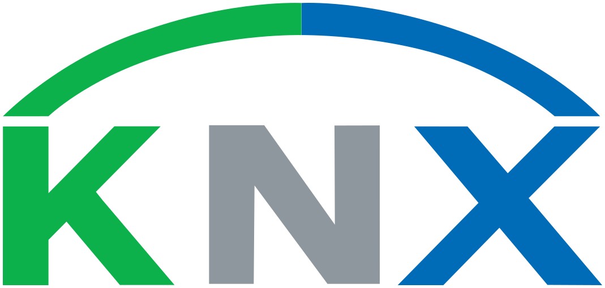

Nos marques partenaires
Le meilleur du matériel européen.
Nous travaillons avec une sélection resserrée de fabricants qui partagent notre exigence de qualité, de durabilité et d'esthétique.

Standard mondial
Tableaux Elexium
BASALTE
Switches design
Scénarios & clim
 Détection & horloges
Détection & horloges
Et de nombreuses autres références sélectionnées au cas par cas selon votre projet.